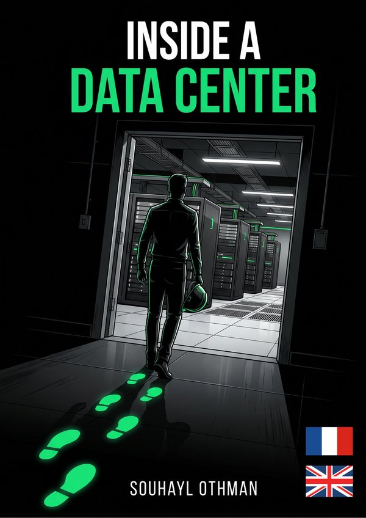
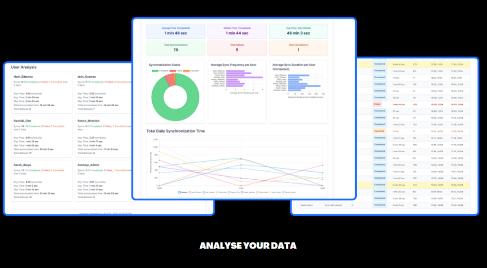
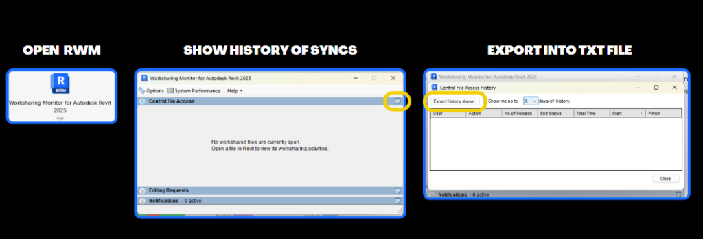
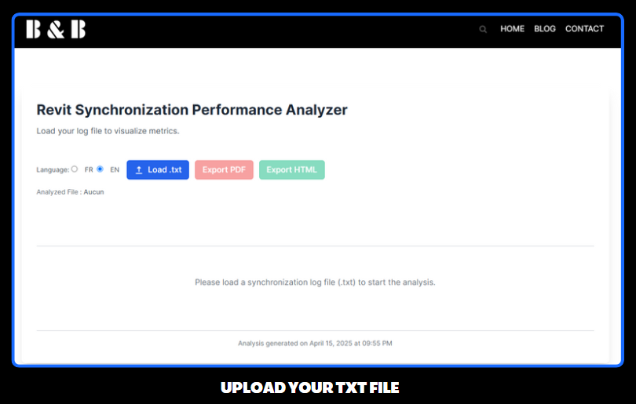
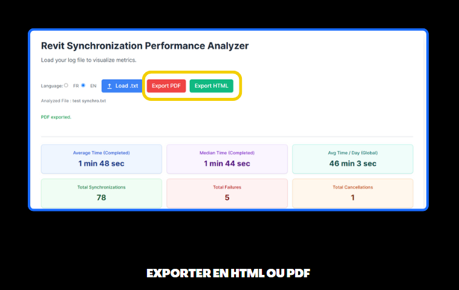

Inside a Data Center
A visual guide to understanding, designing, and speaking the language of data centers. Free 9-page preview, no strings attached.
Get the free previewQui n’a jamais soupiré devant une fenêtre “Synchronisation avec le fichier central” qui semble durer une éternité sur Revit ? Comprendre les performances de collaboration, identifier les goulots d’étranglement et optimiser les habitudes de travail de l’équipe est crucial pour la productivité. Revit nous offre le Worksharing Monitor et son fichier log `.txt`, mais avouons-le, déchiffrer ce fichier brut relève souvent du parcours du combattant: maintenant c’est possible avec Revit Sync Analyzer.
La bonne nouvelle ? Chez BIMandbeam, nous avons créé la solution pour vous !
Nous sommes ravis de vous présenter notre tout nouvel outil web gratuit : le Revit Sync Analyzer.
Cet outil a été conçu pour transformer le fichier log indigeste du Worksharing Monitor en graphiques parlants, statistiques claires et informations directement exploitables. Fini les heures passées à copier-coller dans Excel !

Pourquoi Analyser les Fichiers du Worksharing Monitor ?
Exploiter les données du Worksharing Monitor, c’est se donner les moyens de :
- Comprendre les Temps de Synchronisation (SWC) : Identifier les synchros les plus longues, voir qui est impacté, repérer des patterns (lenteurs à certaines heures, après certaines actions…).
- Suivre l’Activité des Utilisateurs : Visualiser la fréquence et les horaires de synchronisation de chaque membre de l’équipe.
- Diagnostiquer les Problèmes : Corréler les lenteurs avec des utilisateurs, des versions de Revit, ou suspecter des problèmes liés au modèle (poids, avertissements…), au réseau ou aux postes de travail.
- Promouvoir les Bonnes Pratiques : Utiliser des données objectives pour discuter de la fréquence idéale de synchronisation et de l’importance de garder des modèles sains.
Le fichier `.txt` brut contient ces informations, mais notre outil vous les sert sur un plateau !
Présentation de l’Outil “Revit Sync Analyzer” de BIMandbeam
L’Objectif : Simplicité et Clarté
Nous avons voulu un outil simple, rapide et visuel. L’idée est de vous permettre d’uploader votre fichier log et d’obtenir immédiatement une vue d’ensemble compréhensible des performances de synchronisation de votre projet.
Fonctionnalités Principales
Notre Revit Sync Analyzer vous offre :
- Upload Ultra-Simple : Glissez-déposez votre fichier `.txt` ou cliquez pour le sélectionner.
- Tableau Récapitulatif : Une liste claire de toutes les synchronisations enregistrées avec l’utilisateur, la date, l’heure, la durée et (si disponible dans le log) la taille des données transférées.
- Graphiques Interactifs :
- Visualisez la durée des synchronisations pour chaque utilisateur.
- Suivez l’évolution des temps de synchro au fil du temps.
- Voyez la répartition du nombre de synchronisations par membre de l’équipe.
- Statistiques Essentielles : Accédez en un coup d’œil aux temps de synchronisation moyen, maximum et minimum (global et par utilisateur), au nombre total de synchros, etc.
(Note : L’outil est en constante évolution, d’autres fonctionnalités pourraient apparaître !)
Accès Gratuit et Immédiat
Rendez-vous simplement sur .//revit-sync/. L’outil est entièrement gratuit et ne nécessite aucune inscription.
Comment Utiliser l’Outil Revit Sync Analyzer : Guide Rapide
C’est un jeu d’enfant :
- Récupérez votre fichier log : Dans Revit, ouvrez le Revit Worksharing Monitor (onglet Collaborer > Worksharing Monitor) ou via Windows directement tapez Revit Worksharing Monitor. Allez dans l’onglet “Historique des opérations utilisateur” (ou similaire selon votre version) et cliquez sur “Enregistrer sous…” pour sauvegarder le fichier `.txt`.

- Accédez à l’outil : Ouvrez .//revit-sync/ dans votre navigateur.
- Chargez votre fichier : Cliquez sur le bouton d’upload ou glissez-déposez votre fichier `.txt` dans la zone prévue.

- Analysez ! Explorez instantanément le tableau de bord, les graphiques et les statistiques générés. Cherchez les points qui sortent de l’ordinaire !

- Exportez ! Exportez instantanément le tableau de bord, en format .html ou .pdf pour alimenter vos rapports d’audits des maquettes Revit.

Bénéfices pour les BIM Managers et les Équipes Projet
Utiliser régulièrement le Revit Sync Analyzer vous apporte :
- Un gain de temps précieux dans l’analyse des performances.
- Une meilleure visibilité sur les habitudes et les éventuels points de friction de la collaboration.
- La capacité d’identifier rapidement les synchronisations problématiques ou les utilisateurs nécessitant un accompagnement.
- Un support objectif pour discuter et améliorer les bonnes pratiques Revit au sein de l’équipe.
- Une aide à la décision pour savoir quand il est temps d’optimiser un modèle, d’investiguer sur le réseau ou de mettre à jour du matériel.
Confidentialité et Sécurité de Vos Données : Notre Priorité Absolue
Nous savons que les données de vos projets sont sensibles. C’est pourquoi nous avons conçu cet outil avec la confidentialité comme priorité numéro un :
Vos données restent chez vous ! L’analyse du fichier .txt se fait entièrement dans VOTRE navigateur web (côté client). Votre fichier n’est JAMAIS envoyé, uploadé ou stocké sur nos serveurs.
Tout le traitement est effectué localement sur votre ordinateur. Vous pouvez utiliser l’outil en toute confiance, la confidentialité de vos informations est garantie.
Conclusion
Le nouvel outil Revit Sync Analyzer de BIMandbeam est là pour vous simplifier la vie et vous aider à mieux comprendre et optimiser la collaboration sur vos projets Revit. Fini le décryptage manuel des logs, place à une analyse rapide, visuelle et surtout, 100% confidentielle.
N’attendez plus pour l’essayer ! Rendez-vous sur .//revit-sync/ et chargez votre premier fichier log.
Votre avis nous intéresse ! Cet outil est fait pour la communauté. Utilisez les commentaires ci-dessous pour nous faire part de vos retours, de vos suggestions d’amélioration ou pour signaler le moindre souci. Nous sommes à l’écoute pour le faire évoluer !
FAQ – Outil Revit Sync Analyzer
1. L’outil Revit Sync Analyzer est-il vraiment gratuit ?
Oui, absolument ! L’outil est entièrement gratuit et accessible à tous, sans aucune limitation ni besoin de créer un compte.
2. Quel type de fichier l’outil peut-il analyser ?
L’outil est conçu pour analyser les fichiers logs au format .txt générés par le Worksharing Monitor de Revit.
3. Mes données sont-elles en sécurité lorsque j’utilise cet outil ?
Oui, totalement. L’analyse se fait à 100% côté client, dans votre navigateur. Votre fichier .txt n’est jamais transmis à nos serveurs. Vos données restent sur votre ordinateur, garantissant une confidentialité maximale.
4. Que faire si j’ai un très gros fichier log ?
L’analyse étant faite par votre navigateur, les performances peuvent dépendre de la puissance de votre ordinateur et de la taille du fichier. Pour de très gros fichiers (plusieurs dizaines de Mo), le navigateur pourrait mettre un peu de temps à traiter les données. Si vous rencontrez des problèmes, n’hésitez pas à nous le signaler.
5. Puis-je suggérer des améliorations pour l’outil ?
Bien sûr ! Nous sommes très preneurs de vos retours et suggestions. Utilisez la section commentaires de cet article ou notre page contact pour nous faire part de vos idées d’amélioration ou des fonctionnalités que vous aimeriez voir ajoutées.